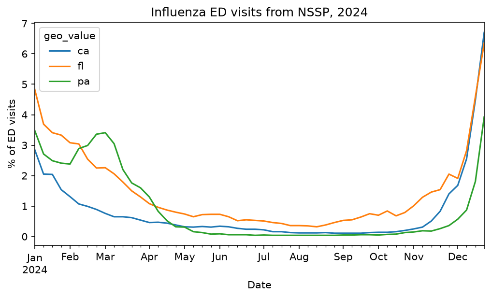
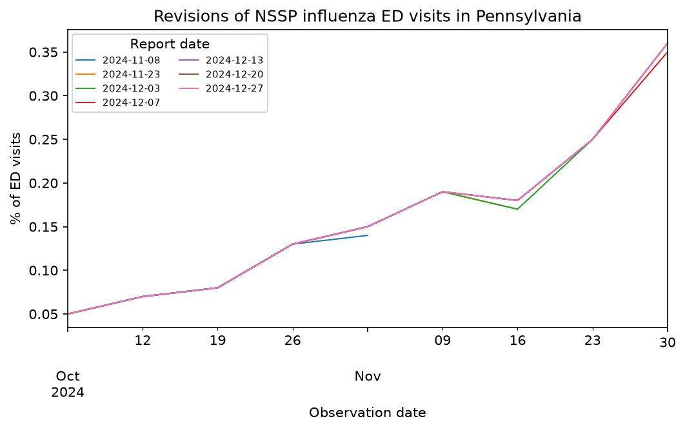

Getting started¶
The epidatpy package provides access to all the endpoints of the Delphi Epidata API, and can be used to make requests for specific signals on specific dates and in select geographic regions. It is widely used in epidemiological research, real-time forecasting models, and public health dashboards.
Setup¶
Installation¶
Install the stable version from PyPI:
pip install epidatpy
Or, for the development version, install from GitHub:
pip install "git+https://github.com/cmu-delphi/epidatpy.git#egg=epidatpy"
API keys¶
The Delphi API requires a (free) API key for full functionality. While most endpoints are available without one, there are limits on API usage for anonymous users, including a rate limit.
To generate your key,
register for a pseudo-anonymous account.
epidatpy reads the key from the DELPHI_EPIDATA_KEY environment variable. We
recommend storing it in a .env file, loading it with
python-dotenv, and adding .env
to your .gitignore.
The Delphi V5 API¶
epidatpy allows three categories of data access to the Delphi V5 API:
epidata_snapshot()provides a specific view of how a dataset looked at a point in time.epidata_archive()fetches all versions of a dataset across time, representing the full revision history.epidata_aux()accesses source-specific auxiliary tables containing metadata, laboratory protocols, or additional static keys (such as NWSS wastewater facility descriptions).
Additionally, epidata_meta() provides access to system metadata to list
available sources, signals, geographic granularities, and date ranges.
epidata() is a convenience wrapper that routes to epidata_archive() if you
pass report_time, or to epidata_snapshot() if you pass snapshot_date (or
neither).
The older V4 (pub_covidcast) and V3 (pub_fluview, pub_flusurv, …)
endpoints still work, but starting in October 2026 they are tentatively
deprecated in favor of V5. New code should start on V5; see the
migration guide for how to move existing code.
Basic usage¶
To make a request of a particular data source at a specific point in time, we
use epidata_snapshot(). This function needs the source name, signal name, and a
geographic level in order to complete a query.
Suppose we are interested in the nssp source, which provides access to a
wide range of
emergency department visits data. epidata_meta() tells us which signals and
geographic levels the source offers, and the range of dates available:
import pandas as pd
pd.set_option("display.max_columns", None)
pd.set_option("display.max_rows", 10)
pd.set_option("display.width", 1000)
from epidatpy import EpiDataContext, EpiRange
epidata = EpiDataContext()
meta = epidata.epidata_meta(source="nssp")
print(meta["signals"])
print(meta["geo_types"])
print(meta["reference_time_range"])
print(meta["report_time_range"])
['pct_ed_visits_ari', 'pct_ed_visits_combined', 'pct_ed_visits_covid', 'pct_ed_visits_influenza', 'pct_ed_visits_rsv', 'smoothed_pct_ed_visits_combined', 'smoothed_pct_ed_visits_covid', 'smoothed_pct_ed_visits_influenza', 'smoothed_pct_ed_visits_rsv']
['census_division', 'census_region', 'county', 'hhs', 'hrr', 'hsa_nci', 'msa', 'nation', 'state']
{'latest': '2026-09-19', 'first': '2022-10-01'}
{'latest': '2026-09-23T00:00:00Z', 'first': '2024-04-18T00:00:00Z'}
All of the fetch functions return an EpiDataCall, a not-yet-executed query
that you can inspect (.request_url() shows the underlying API request) and
then execute with .df() to obtain a pandas DataFrame:
# Obtain the latest snapshot of the influenza ED-visit percentage
# from the NSSP source for the US
apicall = epidata.epidata_snapshot(
source="nssp",
signals="pct_ed_visits_influenza",
geo_type="nation",
)
print(apicall)
us_flu = apicall.df()
us_flu
EpiDataCall(endpoint=snapshot/, params={'source': 'nssp', 'signal': 'pct_ed_visits_influenza', 'geo_type': 'nation'})
| signal | report_time | geo_type | geo_value | fill_method | reference_time | value | |
|---|---|---|---|---|---|---|---|
| 0 | pct_ed_visits_influenza | 2026-06-26 00:00:00+00:00 | nation | us | source | 2022-10-01 | 0.48 |
| 1 | pct_ed_visits_influenza | 2026-06-26 00:00:00+00:00 | nation | us | source | 2022-10-08 | 0.67 |
| 2 | pct_ed_visits_influenza | 2026-06-26 00:00:00+00:00 | nation | us | source | 2022-10-15 | 0.9 |
| 3 | pct_ed_visits_influenza | 2026-06-26 00:00:00+00:00 | nation | us | source | 2022-10-22 | 1.29 |
| 4 | pct_ed_visits_influenza | 2026-06-26 00:00:00+00:00 | nation | us | source | 2022-10-29 | 2.47 |
| ... | ... | ... | ... | ... | ... | ... | ... |
| 203 | pct_ed_visits_influenza | 2026-09-09 00:00:00+00:00 | nation | us | source | 2024-09-07 | 0.18 |
| 204 | pct_ed_visits_influenza | 2026-09-09 00:00:00+00:00 | nation | us | source | 2026-08-29 | 0.16 |
| 205 | pct_ed_visits_influenza | 2026-09-16 00:00:00+00:00 | nation | us | source | 2026-09-05 | 0.2 |
| 206 | pct_ed_visits_influenza | 2026-09-23 00:00:00+00:00 | nation | us | source | 2026-09-12 | 0.26 |
| 207 | pct_ed_visits_influenza | 2026-09-23 00:00:00+00:00 | nation | us | source | 2026-09-19 | 0.31 |
208 rows × 7 columns
Each row represents one observation for the US on one date. The location is
given in the geo_value column, the date it describes in the reference_time
column, the value of the requested signal in value, and the publication time
in report_time (a UTC timestamp).
The Delphi V5 API makes signals available at different geographic levels,
depending on the source. To request signals for all states instead of the
entire US, we change the geo_type argument. This automatically returns all
available data for that geo type:
# Obtain the latest snapshot of the influenza ED-visit percentage
# from the NSSP source across all available dates and states
epidata.epidata_snapshot(
source="nssp",
signals="pct_ed_visits_influenza",
geo_type="state",
).df()
| signal | report_time | geo_type | geo_value | fill_method | reference_time | value | |
|---|---|---|---|---|---|---|---|
| 0 | pct_ed_visits_influenza | 2026-06-26 00:00:00+00:00 | state | ak | source | 2022-10-01 | 0.14 |
| 1 | pct_ed_visits_influenza | 2026-06-26 00:00:00+00:00 | state | ak | source | 2022-10-08 | 0.24 |
| 2 | pct_ed_visits_influenza | 2026-06-26 00:00:00+00:00 | state | ak | source | 2022-10-15 | 0.32 |
| 3 | pct_ed_visits_influenza | 2026-06-26 00:00:00+00:00 | state | ak | source | 2022-10-22 | 0.76 |
| 4 | pct_ed_visits_influenza | 2026-06-26 00:00:00+00:00 | state | ak | source | 2022-10-29 | 1.16 |
| ... | ... | ... | ... | ... | ... | ... | ... |
| 10602 | pct_ed_visits_influenza | 2026-09-23 00:00:00+00:00 | state | va | source | 2026-09-19 | 0.22 |
| 10603 | pct_ed_visits_influenza | 2026-09-23 00:00:00+00:00 | state | ny | source | 2026-09-19 | 0.16 |
| 10604 | pct_ed_visits_influenza | 2026-09-23 00:00:00+00:00 | state | in | source | 2026-09-19 | 0.12 |
| 10605 | pct_ed_visits_influenza | 2026-09-23 00:00:00+00:00 | state | mi | source | 2026-09-19 | 0.1 |
| 10606 | pct_ed_visits_influenza | 2026-09-23 00:00:00+00:00 | state | wy | source | 2026-09-19 | 0.54 |
10607 rows × 7 columns
You can query multiple signals in a single request by passing a list to
signals, and narrow the result with geo_values and a reference_time range
(both are filtered locally after the request):
# Obtain both influenza and COVID-19 ED-visit percentages in a single query
epidata.epidata_snapshot(
source="nssp",
signals=["pct_ed_visits_influenza", "pct_ed_visits_covid"],
geo_type="state",
geo_values="pa",
reference_time=EpiRange("2024-12-01", "2024-12-15"),
).df()
| signal | report_time | geo_type | geo_value | fill_method | reference_time | value | |
|---|---|---|---|---|---|---|---|
| 14013 | pct_ed_visits_covid | 2026-06-26 00:00:00+00:00 | state | pa | source | 2024-12-07 | 0.75 |
| 14014 | pct_ed_visits_influenza | 2026-06-26 00:00:00+00:00 | state | pa | source | 2024-12-07 | 0.57 |
| 14015 | pct_ed_visits_covid | 2026-06-26 00:00:00+00:00 | state | pa | source | 2024-12-14 | 0.82 |
| 14016 | pct_ed_visits_influenza | 2026-06-26 00:00:00+00:00 | state | pa | source | 2024-12-14 | 0.87 |
Alternatively, we can fetch the time series for a subset of states and reference
dates by listing out the desired locations in geo_values and using a range in
reference_time:
# Obtain the data from January 1st, 2024 to January 1st, 2025
# of the influenza ED-visit percentage from the NSSP source for
# Pennsylvania, California, and Florida
states_flu = epidata.epidata_snapshot(
source="nssp",
signals="pct_ed_visits_influenza",
geo_type="state",
geo_values=["pa", "ca", "fl"],
reference_time=EpiRange("2024-01-01", "2025-01-01"),
).df()
states_flu
| signal | report_time | geo_type | geo_value | fill_method | reference_time | value | |
|---|---|---|---|---|---|---|---|
| 762 | pct_ed_visits_influenza | 2026-06-26 00:00:00+00:00 | state | ca | source | 2024-02-03 | 1.31 |
| 763 | pct_ed_visits_influenza | 2026-06-26 00:00:00+00:00 | state | ca | source | 2024-02-17 | 0.99 |
| 764 | pct_ed_visits_influenza | 2026-06-26 00:00:00+00:00 | state | ca | source | 2024-03-02 | 0.76 |
| 765 | pct_ed_visits_influenza | 2026-06-26 00:00:00+00:00 | state | ca | source | 2024-03-09 | 0.65 |
| 766 | pct_ed_visits_influenza | 2026-06-26 00:00:00+00:00 | state | ca | source | 2024-03-16 | 0.65 |
| ... | ... | ... | ... | ... | ... | ... | ... |
| 9881 | pct_ed_visits_influenza | 2026-08-05 00:00:00+00:00 | state | ca | source | 2024-12-28 | 6.7 |
| 10100 | pct_ed_visits_influenza | 2026-08-26 00:00:00+00:00 | state | ca | source | 2024-02-24 | 0.89 |
| 10101 | pct_ed_visits_influenza | 2026-08-26 00:00:00+00:00 | state | ca | source | 2024-03-23 | 0.62 |
| 10115 | pct_ed_visits_influenza | 2026-08-26 00:00:00+00:00 | state | ca | source | 2024-01-27 | 1.54 |
| 10118 | pct_ed_visits_influenza | 2026-08-26 00:00:00+00:00 | state | ca | source | 2024-01-13 | 2.05 |
156 rows × 7 columns
geo_type also accepts several values. The server handles one geographic level
per request, so epidatpy issues one request per level and concatenates the
results:
epidata.epidata_snapshot(
source="nssp",
signals="pct_ed_visits_influenza",
geo_type=["nation", "hhs"],
reference_time="2024-12-07",
).df()
| signal | report_time | geo_type | geo_value | fill_method | reference_time | value | |
|---|---|---|---|---|---|---|---|
| 0 | pct_ed_visits_influenza | 2026-06-26 00:00:00+00:00 | nation | us | source | 2024-12-07 | 1.07 |
| 1 | pct_ed_visits_influenza | 2026-06-26 00:00:00+00:00 | hhs | 1 | zero | 2024-12-07 | 0.44664 |
| 2 | pct_ed_visits_influenza | 2026-06-26 00:00:00+00:00 | hhs | 10 | zero | 2024-12-07 | 1.46845 |
| 3 | pct_ed_visits_influenza | 2026-06-26 00:00:00+00:00 | hhs | 2 | zero | 2024-12-07 | 0.541555 |
| 4 | pct_ed_visits_influenza | 2026-06-26 00:00:00+00:00 | hhs | 3 | zero | 2024-12-07 | 0.564572 |
| ... | ... | ... | ... | ... | ... | ... | ... |
| 16 | pct_ed_visits_influenza | 2026-07-08 00:00:00+00:00 | hhs | 5 | ave | 2024-12-07 | 0.527951 |
| 17 | pct_ed_visits_influenza | 2026-07-29 00:00:00+00:00 | hhs | 4 | zero | 2024-12-07 | 1.294944 |
| 18 | pct_ed_visits_influenza | 2026-07-29 00:00:00+00:00 | hhs | 9 | ave | 2024-12-07 | 1.943976 |
| 19 | pct_ed_visits_influenza | 2026-07-29 00:00:00+00:00 | hhs | 9 | zero | 2024-12-07 | 1.943976 |
| 20 | pct_ed_visits_influenza | 2026-07-29 00:00:00+00:00 | hhs | 4 | ave | 2024-12-07 | 1.294944 |
21 rows × 7 columns
Getting versioned data¶
The Delphi V5 API stores a historical record of all data, including corrections
and updates, which is particularly useful for accurately backtesting forecasting
models. To retrieve versioned data in epidata_snapshot(), we use the
snapshot_date argument, which fetches the data as it was known on a specific
date (a date, a YYYY-MM-DD string, or a datetime for an exact instant):
# Obtain the influenza ED-visit percentage from NSSP for Pennsylvania
# as it was known on 2025-01-01
epidata.epidata_snapshot(
source="nssp",
signals="pct_ed_visits_influenza",
geo_type="state",
geo_values="pa",
snapshot_date="2025-01-01",
).df()
| signal | report_time | geo_type | geo_value | fill_method | reference_time | value | |
|---|---|---|---|---|---|---|---|
| 4056 | pct_ed_visits_influenza | 2024-12-27 00:00:00+00:00 | state | pa | source | 2023-09-09 | 0.08 |
| 4057 | pct_ed_visits_influenza | 2024-12-27 00:00:00+00:00 | state | pa | source | 2023-09-16 | 0.08 |
| 4058 | pct_ed_visits_influenza | 2024-12-27 00:00:00+00:00 | state | pa | source | 2023-09-23 | 0.09 |
| 4059 | pct_ed_visits_influenza | 2024-12-27 00:00:00+00:00 | state | pa | source | 2023-09-30 | 0.07 |
| 4060 | pct_ed_visits_influenza | 2024-12-27 00:00:00+00:00 | state | pa | source | 2023-10-07 | 0.06 |
| ... | ... | ... | ... | ... | ... | ... | ... |
| 4678 | pct_ed_visits_influenza | 2024-12-27 00:00:00+00:00 | state | pa | source | 2023-08-05 | 0.05 |
| 4679 | pct_ed_visits_influenza | 2024-12-27 00:00:00+00:00 | state | pa | source | 2023-08-12 | 0.03 |
| 4680 | pct_ed_visits_influenza | 2024-12-27 00:00:00+00:00 | state | pa | source | 2023-08-19 | 0.05 |
| 4681 | pct_ed_visits_influenza | 2024-12-27 00:00:00+00:00 | state | pa | source | 2023-08-26 | 0.05 |
| 4682 | pct_ed_visits_influenza | 2024-12-27 00:00:00+00:00 | state | pa | source | 2023-09-02 | 0.06 |
117 rows × 7 columns
To request all versions of the data issued within a specific time range, we use
epidata_archive() with the report_time argument. It accepts a comparison
string (such as "<2025-01-15" or ">=2024-12-01") or an EpiRange for an
inclusive range of report dates. A bare date is not accepted: for the data as it
looked on a single date, use epidata_snapshot() instead.
# See how the estimate for a SINGLE reference date (2024-12-07) evolved
# by fetching all reports issued in December 2024 and early January 2025
epidata.epidata_archive(
source="nssp",
signals="pct_ed_visits_influenza",
geo_type="state",
geo_values="pa",
reference_time="2024-12-07",
report_time=EpiRange("2024-12-01", "2025-01-15"),
).df()
| signal | report_time | geo_type | geo_value | fill_method | reference_time | value | |
|---|---|---|---|---|---|---|---|
| 15276 | pct_ed_visits_influenza | 2024-12-13 00:00:00+00:00 | state | pa | source | 2024-12-07 | 0.55 |
| 21007 | pct_ed_visits_influenza | 2024-12-20 00:00:00+00:00 | state | pa | source | 2024-12-07 | 0.56 |
| 26986 | pct_ed_visits_influenza | 2024-12-27 00:00:00+00:00 | state | pa | source | 2024-12-07 | 0.56 |
| 32897 | pct_ed_visits_influenza | 2025-01-03 00:00:00+00:00 | state | pa | source | 2024-12-07 | 0.56 |
| 38589 | pct_ed_visits_influenza | 2025-01-10 00:00:00+00:00 | state | pa | source | 2024-12-07 | 0.56 |
# Everything reported strictly before 2024-12-15 for the same reference date
epidata.epidata_archive(
source="nssp",
signals="pct_ed_visits_influenza",
geo_type="state",
geo_values="pa",
reference_time="2024-12-07",
report_time="<2024-12-15",
).df()
| signal | report_time | geo_type | geo_value | fill_method | reference_time | value | |
|---|---|---|---|---|---|---|---|
| 104950 | pct_ed_visits_influenza | 2024-12-13 00:00:00+00:00 | state | pa | source | 2024-12-07 | 0.55 |
See the versioned data notebook for details and more ways to specify versioned data.
Auxiliary data¶
Some sources carry extra columns alongside the signal data, such as the
population served by each NWSS sewershed or its site metadata.
epidata_aux() retrieves that auxiliary data, either on its own or merged
onto a signal pull.
To pull it directly by source, pass named filters on the source’s key
columns as keyword arguments; columns selects specific fields. To see
which key columns a source has, consult its page in the V5 signals
documentation.
aux_data = epidata.epidata_aux(
source="nwss",
pcr_target="sars-cov-2",
sample_index=["92012", "92013"],
).df()
aux_data.head()
| report_time | geo_value | reference_time | nwss_source | sample_index | pcr_target | report_ts_nominal_end | state_territory | county_fips | counties_served | population_served | sample_type | sample_matrix | sample_location | flow_rate | concentration_method | pasteurized | pcr_type | extraction_method | major_lab_method | inhibition_detect | inhibition_adjust | ntc_amplify | pcr_gene_target_agg | pcr_target_units | lod_sewage | hum_frac_target_mic | hum_frac_mic_conc | hum_frac_mic_unit | rec_eff_percent | rec_eff_target_name | rec_eff_spike_matrix | rec_eff_spike_conc | pipeline_run_id | report_ts_actual | comments | |
|---|---|---|---|---|---|---|---|---|---|---|---|---|---|---|---|---|---|---|---|---|---|---|---|---|---|---|---|---|---|---|---|---|---|---|---|---|
| 0 | 2026-06-26 00:00:00+00:00 | 162 | 2026-01-27 | CDC_Verily | 92012 | sars-cov-2 | NaN | ca | 06079 | San Luis Obispo | 14465 | 24-hr time-weighted composite | post grit removal | wwtp | 0.45 | ceres nanotrap | f | ddpcr | thermo magmax viral/pathogen nucleic acid isol... | 2 | f | f | f | n | copies/l wastewater | 1500 | pepper mild mottle virus | 153424325.78462 | copies/l wastewater | 40.7 | bcov vaccine | clarified sample | 5 | 7914 | 2026-06-26 21:04:11 | NaN |
| 1 | 2026-06-19 00:00:00+00:00 | 162 | 2026-01-27 | CDC_Verily | 92012 | sars-cov-2 | 2026-06-26 00:00:00 | ca | 06079 | San Luis Obispo | 14465 | 24-hr time-weighted composite | post grit removal | wwtp | 0.45 | ceres nanotrap | f | ddpcr | thermo magmax viral/pathogen nucleic acid isol... | 2 | f | f | f | n | copies/l wastewater | 1500 | pepper mild mottle virus | 153424325.78462 | copies/l wastewater | 40.7 | bcov vaccine | clarified sample | 5 | 7895 | 2026-06-26 21:02:14 | NaN |
| 2 | 2026-06-12 00:00:00+00:00 | 162 | 2026-01-27 | CDC_Verily | 92012 | sars-cov-2 | 2026-06-19 00:00:00 | ca | 06079 | San Luis Obispo | 14465 | 24-hr time-weighted composite | post grit removal | wwtp | 0.45 | ceres nanotrap | f | ddpcr | thermo magmax viral/pathogen nucleic acid isol... | 2 | f | f | f | n | copies/l wastewater | 1500 | pepper mild mottle virus | 153424325.78462 | copies/l wastewater | 40.7 | bcov vaccine | clarified sample | 5 | 7879 | 2026-06-26 21:00:39 | NaN |
| 3 | 2026-06-05 00:00:00+00:00 | 162 | 2026-01-27 | CDC_Verily | 92012 | sars-cov-2 | 2026-06-12 00:00:00 | ca | 06079 | San Luis Obispo | 14465 | 24-hr time-weighted composite | post grit removal | wwtp | 0.45 | ceres nanotrap | f | ddpcr | thermo magmax viral/pathogen nucleic acid isol... | 2 | f | f | f | n | copies/l wastewater | 1500 | pepper mild mottle virus | 153424325.78462 | copies/l wastewater | 40.7 | bcov vaccine | clarified sample | 5 | 7868 | 2026-06-26 20:59:33 | NaN |
| 4 | 2026-05-30 00:00:00+00:00 | 162 | 2026-01-27 | CDC_Verily | 92012 | sars-cov-2 | 2026-06-05 00:00:00 | ca | 06079 | San Luis Obispo | 14465 | 24-hr time-weighted composite | post grit removal | wwtp | 0.45 | ceres nanotrap | f | ddpcr | thermo magmax viral/pathogen nucleic acid isol... | 2 | f | f | f | n | copies/l wastewater | 1500 | pepper mild mottle virus | 153424325.78462 | copies/l wastewater | 40.7 | bcov vaccine | clarified sample | 5 | 7858 | 2026-06-26 20:58:46 | NaN |
You can also attach the auxiliary columns to a signal pull by passing the
result of epidata_snapshot() or epidata_archive() straight to
epidata_aux(). It fetches the matching auxiliary data and left-joins it on
the shared key columns; the key filters are inferred from the base dataset,
so you don’t have to repeat them.
# Fetch signal data for a specific sewershed
nwss_data = epidata.epidata_snapshot(
source="nwss",
signals="covid_avg_conc",
geo_type="sewershed",
geo_values="128",
reference_time=EpiRange("2024-12-01", "2025-01-01"),
).df()
nwss_data.head()
| signal | report_time | geo_type | geo_value | fill_method | reference_time | value | nwss_source | sample_index | pcr_target | |
|---|---|---|---|---|---|---|---|---|---|---|
| 132 | covid_avg_conc | 2026-06-26 00:00:00+00:00 | sewershed | 128 | source | 2024-12-19 | 9637.31731 | CDC_Verily | 13733 | sars-cov-2 |
| 8871 | covid_avg_conc | 2026-06-26 00:00:00+00:00 | sewershed | 128 | source | 2024-12-03 | 29207.79037 | CDC_Verily | 161629 | sars-cov-2 |
| 135477 | covid_avg_conc | 2026-06-26 00:00:00+00:00 | sewershed | 128 | source | 2024-12-17 | 4783.68406 | CDC_Verily | 159055 | sars-cov-2 |
| 136396 | covid_avg_conc | 2026-06-26 00:00:00+00:00 | sewershed | 128 | source | 2024-12-12 | 21858.78966 | CDC_Verily | 244078 | sars-cov-2 |
| 159055 | covid_avg_conc | 2026-06-26 00:00:00+00:00 | sewershed | 128 | source | 2024-12-10 | 32843.66936 | CDC_Verily | 111700 | sars-cov-2 |
# Attach auxiliary metadata
nwss_merged = epidata.epidata_aux(nwss_data)
nwss_merged.head()
| signal | report_time | geo_type | geo_value | fill_method | reference_time | value | nwss_source | sample_index | pcr_target | report_ts_nominal_end | state_territory | county_fips | counties_served | population_served | sample_type | sample_matrix | sample_location | flow_rate | concentration_method | pasteurized | pcr_type | extraction_method | major_lab_method | inhibition_detect | inhibition_adjust | ntc_amplify | pcr_gene_target_agg | pcr_target_units | lod_sewage | hum_frac_target_mic | hum_frac_mic_conc | hum_frac_mic_unit | rec_eff_percent | rec_eff_target_name | rec_eff_spike_matrix | rec_eff_spike_conc | pipeline_run_id | report_ts_actual | comments | |
|---|---|---|---|---|---|---|---|---|---|---|---|---|---|---|---|---|---|---|---|---|---|---|---|---|---|---|---|---|---|---|---|---|---|---|---|---|---|---|---|---|
| 132 | covid_avg_conc | 2026-06-26 00:00:00+00:00 | sewershed | 128 | source | 2024-12-19 | 9637.31731 | CDC_Verily | 13733 | sars-cov-2 | NaN | ca | 06053 | Monterey | 16000 | 24-hr time-weighted composite | post grit removal | wwtp | 1.105 | ceres nanotrap | f | ddpcr | thermo magmax viral/pathogen nucleic acid isol... | 2 | f | f | f | n | copies/l wastewater | 1500 | pepper mild mottle virus | 80597468.45538 | copies/l wastewater | 50.1 | bcov vaccine | clarified sample | 5 | 7914 | 2026-06-26 21:04:11 | NaN |
| 8871 | covid_avg_conc | 2026-06-26 00:00:00+00:00 | sewershed | 128 | source | 2024-12-03 | 29207.79037 | CDC_Verily | 161629 | sars-cov-2 | NaN | ca | 06053 | Monterey | 16000 | 24-hr time-weighted composite | post grit removal | wwtp | 1.105 | ceres nanotrap | f | ddpcr | thermo magmax viral/pathogen nucleic acid isol... | 2 | f | f | f | n | copies/l wastewater | 1500 | pepper mild mottle virus | 112079214.25231 | copies/l wastewater | 77.4 | bcov vaccine | clarified sample | 5 | 7914 | 2026-06-26 21:04:11 | NaN |
| 135477 | covid_avg_conc | 2026-06-26 00:00:00+00:00 | sewershed | 128 | source | 2024-12-17 | 4783.68406 | CDC_Verily | 159055 | sars-cov-2 | NaN | ca | 06053 | Monterey | 16000 | 24-hr time-weighted composite | post grit removal | wwtp | 1.105 | ceres nanotrap | f | ddpcr | thermo magmax viral/pathogen nucleic acid isol... | 2 | f | f | f | n | copies/l wastewater | 1500 | pepper mild mottle virus | 72279799.23692 | copies/l wastewater | 36.9 | bcov vaccine | clarified sample | 5 | 7914 | 2026-06-26 21:04:11 | NaN |
| 136396 | covid_avg_conc | 2026-06-26 00:00:00+00:00 | sewershed | 128 | source | 2024-12-12 | 21858.78966 | CDC_Verily | 244078 | sars-cov-2 | NaN | ca | 06053 | Monterey | 16000 | 24-hr time-weighted composite | post grit removal | wwtp | 1.105 | ceres nanotrap | f | ddpcr | thermo magmax viral/pathogen nucleic acid isol... | 2 | f | f | f | n | copies/l wastewater | 1500 | pepper mild mottle virus | 113049569.94462 | copies/l wastewater | 61.8 | bcov vaccine | clarified sample | 5 | 7914 | 2026-06-26 21:04:11 | NaN |
| 159055 | covid_avg_conc | 2026-06-26 00:00:00+00:00 | sewershed | 128 | source | 2024-12-10 | 32843.66936 | CDC_Verily | 111700 | sars-cov-2 | NaN | ca | 06053 | Monterey | 16000 | 24-hr time-weighted composite | post grit removal | wwtp | 1.105 | ceres nanotrap | f | ddpcr | thermo magmax viral/pathogen nucleic acid isol... | 2 | f | f | f | n | copies/l wastewater | 1500 | pepper mild mottle virus | 201488131.00308 | copies/l wastewater | 74.7 | bcov vaccine | clarified sample | 5 | 7914 | 2026-06-26 21:04:11 | NaN |
Advanced queries¶
Dry runs¶
To inspect the API request a query would make without fetching anything,
build the call and read its request_url(). This works for
epidata_snapshot(), epidata_archive(), and epidata_aux(), since each
returns an EpiDataCall that only contacts the server once you call .df().
dry_run_call = epidata.epidata_snapshot(
source="nssp",
signals="pct_ed_visits_influenza",
geo_type="state",
)
dry_run_call.request_url()
'https://delphi.cmu.edu/epidata/v5/snapshot/?source=nssp&signal=pct_ed_visits_influenza&geo_type=state'
Plotting¶
Because the output data is a standard pandas DataFrame, we can easily plot it using any of the available Python libraries:
import matplotlib.pyplot as plt
plt.rcParams["figure.dpi"] = 150
fig, ax = plt.subplots(figsize=(8, 4))
(
states_flu.pivot_table(values="value", index="reference_time", columns="geo_value").plot(
xlabel="Date", ylabel="% of ED visits", ax=ax, linewidth=1.5
)
)
ax.set_title("Influenza ED visits from NSSP, 2024")
plt.show()

Plotting revision histories¶
We can also visualize revision histories from epidata_archive(). Each line
shows what the time series looked like as of a different publication date:
# Fetch revision history for Pennsylvania influenza ED visits
pa_revisions = epidata.epidata_archive(
source="nssp",
signals="pct_ed_visits_influenza",
geo_type="state",
geo_values="pa",
reference_time=EpiRange("2024-10-01", "2024-12-01"),
report_time=EpiRange("2024-11-01", "2025-01-01"),
).df()
fig, ax = plt.subplots(figsize=(8, 4))
for report_time, group in pa_revisions.groupby("report_time"):
group.sort_values("reference_time").plot(
x="reference_time", y="value", ax=ax, label=report_time.strftime("%Y-%m-%d"), linewidth=1
)
ax.set_title("Revisions of NSSP influenza ED visits in Pennsylvania")
ax.set_xlabel("Observation date")
ax.set_ylabel("% of ED visits")
ax.legend(title="Report date", fontsize=7, ncol=2)
plt.show()

Available data sources and endpoints¶
epidatpy provides access to a broad ecosystem of epidemiological data streams:
V5 sources provide access to active surveillance data queried via
epidata_snapshot()andepidata_archive(). Discover them programmatically withepidata_meta()(nosourceargument lists every source) or interactively on the Delphi EpiPortal.Migrating endpoints are legacy endpoints (such as
pub_covidcast(),pub_fluview(),pub_flusurv(), andpub_meta()) transitioning to V5. See the migration guide for argument mappings.Historical endpoints provide access to datasets whose collection has ended (such as Google Flu Trends, Wikipedia article views, and historical hospitalization series), kept for retrospective analysis via
pub_*functions.International endpoints are a subset of historical datasets that focus on surveillance outside the United States (e.g., PAHO dengue with
pub_paho_dengue()and ECDC ILI withpub_ecdc_ili()).Private endpoints are restricted streams (e.g., CDC web metrics with
pvt_cdc()and digital sensors withpvt_sensors()) that require dedicated secret authentication keys.
all_meta = epidata.epidata_meta()
print(sorted(all_meta))
['claims_inpatient', 'claims_outpatient', 'flusurv', 'fluview_ilinet', 'fluview_resp_lab_clinical', 'fluview_resp_lab_ph', 'nchs_mortality', 'nhsn', 'nickel_beta', 'nssp', 'nwss', 'pophive', 'rvdss', 'sleepcycle', 'va_respiratory']
from epidatpy import available_endpoints
available_endpoints()
| Endpoint | Description | |
|---|---|---|
| 0 | pub_covid_hosp_facility | Fetch COVID hospitalizations by facility. |
| 1 | pub_covid_hosp_facility_lookup | Helper for finding COVID hospitalization facil... |
| 2 | pub_covid_hosp_state_timeseries | Fetch COVID hospitalizations by state. |
| 3 | pub_covidcast | Fetch Delphi's COVID-19 Surveillance Streams. |
| 4 | pub_covidcast_meta | Fetch COVIDcast surveillance stream metadata. |
| ... | ... | ... |
| 23 | pvt_meta_norostat | Fetch NoroSTAT metadata. |
| 24 | pvt_norostat | Fetch NoroSTAT data (point data, no min/max). |
| 25 | pvt_quidel | Fetch Quidel data. |
| 26 | pvt_sensors | Fetch Delphi's digital surveillance sensors. |
| 27 | pvt_twitter | Fetch HealthTweets data. |
28 rows × 2 columns
See the signal discovery notebook for an in-depth guide to discovering signals, browsing metadata, and querying datasets across all these categories.